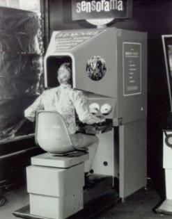
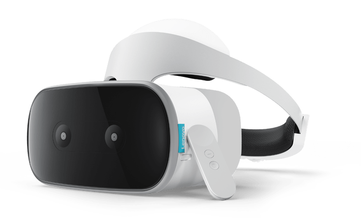

Virtual Reality
A seemingly new way to play video games even more realistically
But what is all the fuzz really about?
How It Works
Virtual reality (VR) is an interactive computer-generated experience taking place within a simulated environment. It incorporates mainly auditory and visual feedback, but may also allow other types of sensory feedback like haptic. This immersive environment can be similar to the real world or it can be fantastical. Augmented reality systems may also be considered a form of VR that layers virtual information over a live camera feed into a headset or through a smartphone or tablet device giving the user the ability to view three-dimensional images.
The Origins
In the 1950s Morton Heilig wrote an "Experience Theatre" that could encompass all the senses in an effective manner, thus drawing the viewer into the onscreen activity. He built a prototype of his vision dubbed the Sensorama in 1962, along with five short films to be displayed in it while engaging multiple senses (sight, sound, smell, and touch). Predating digital computing, the Sensorama was a mechanical device. Heilig also developed what he referred to as the "Telesphere Mask" (patented in 1960). The patent application described the device as "a telescopic television apparatus for individual use...The spectator is given a complete sensation of reality, i.e. moving three dimensional images which may be in colour, with 100% peripheral vision, binaural sound, scents and air breezes".
Where We Are Today
Current VR technology most commonly uses virtual reality headsets or multi-projected environments, sometimes in combination with physical environments or props, to generate realistic images, sounds and other sensations that simulate a user's physical presence in a virtual or imaginary environment.
A person using virtual reality equipment is able to "look around" the artificial world, move around in it, and interact with virtual features or items. The effect is commonly created by VR headsets consisting of a head-mounted display with a small screen in front of the eyes, but can also be created through specially designed rooms with multiple large screens. VR systems that include transmission of vibrations and other sensations to the user through a game controller or other devices are known as haptic systems. This tactile information is generally known as force feedback in medical, video gaming, and military training applications.